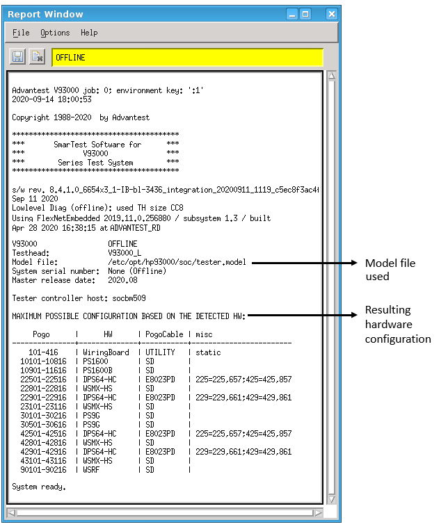

The model file
The model file contains the tester hardware configuration. It specifies what test head cards are installed, their features, and the mapping of these cards to pogo pins on the DUT board interface. It also specifies the reference clock signal for the test system. SmarTest needs this information in order to set the configuration and features of the test system resources for your addressed tests.
When SmarTest is started up in online mode, it reads the model file and reports the detected test system hardware in the report window in the MAXIMUM POSSIBLE CONFIGURATION table. In offline mode it shows the requested configuration defined by the model file. It also lists the referenced model file or a link pointing to it:

Whether starting SmarTest online or offline, the same model file is used - the file located at
or linked from the default location or the model file specified by the environment variable
V93000_MODEL, if set.
The default location of the model file is: /etc/opt/hp93000/soc/model
Alternatively, /etc/opt/hp93000/soc/model can be a link to: /etc/opt/hp93000/soc_common/model
The file name for the model file is: model or tester.model depending on the syntax, see 353017Model file sections.
If you want to use a different file name, set the environment variable
V93000_MODEL and specify the actual file name that you want to apply, for
example, model.offline.
Further information can be found at:
Requests the licenses
For those test system resources and features that require licenses, SmarTest first generates the license requests based on the model file, then reads the *.lic license files to check out the requested licenses from the license server.
A model file template at /var/opt/hp93000/soc_<version>/model_template, which is generated at every online start up, shows the maximum possible configuration. A model file or device license file based on this template will request and block all licenses which possibly might be used.
An example model file at /opt/hp93000/soc_<version>/pws/data/model.def illustrates proper model file syntax.
Licensing-per-device does not break the model file concept and mechanisms. It is rather an add-on and enhancement of that concept. Therefore the device license file must contain only license relevant entries. To ensure compatibility the device license file uses the same syntax as the model file.
Important: If a device license file exists, its parameters will be evaluated and any licensing parameters in the model file will be ignored. To develop a device license file we recommend to use the Testflow Analyzer Tool (TAT).
Detailed model file information
Functional changes
- Introduced before SmarTest 6.3.2
- SmarTest 6.5.4: Report window lists the referenced model file.
- SmarTest 7.5.3: Model file usage introduction updated.